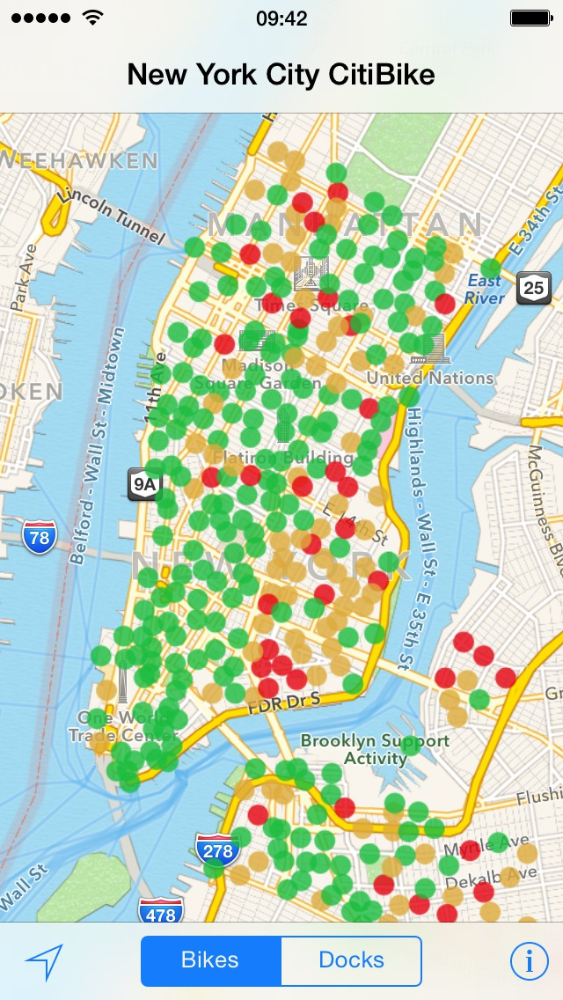
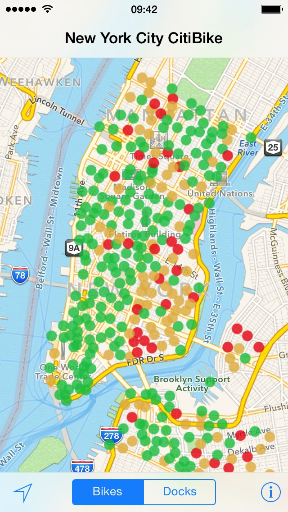

Find a bike of a free dock in an instant.
No need to go around searching for an available dock: just go to the nearest free spot.
Taking a bike for the same trip everyday? Star your favorite stations, and let Bicyclette monitor them.
You’ll be notified automatically of the number of bikes and spots before you get there.
Without even unlocking your iPhone.

Bicyclette works in more than 100 cities around the world, using data provided by the bike-sharing systems operators. More info.
Bicyclette for iPhone and iPad is crafted with love Nicolas Bouilleaud, and tested everyday riding Vélib in Paris.
Comments and ideas are welcome, either by mail at contact@bicyclette-app.com
or on Twitter @bicycletteapp.